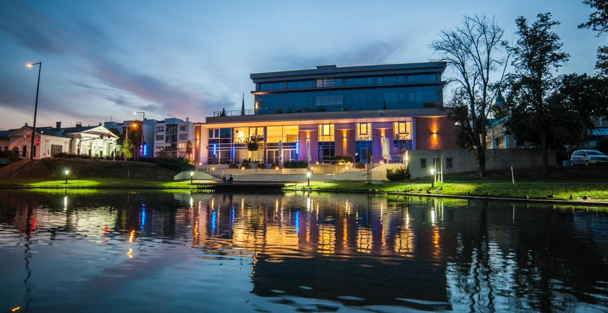
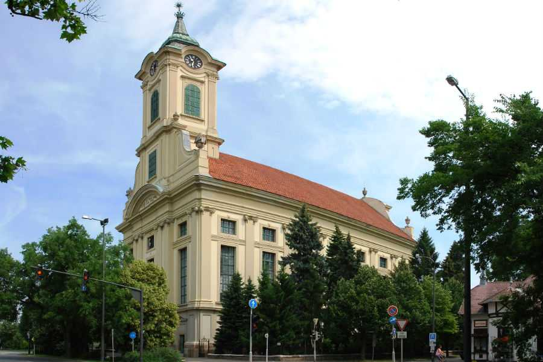
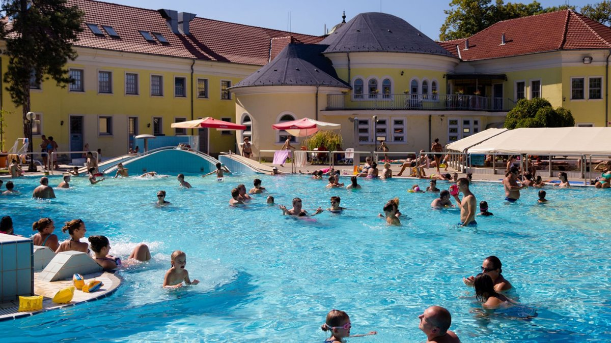
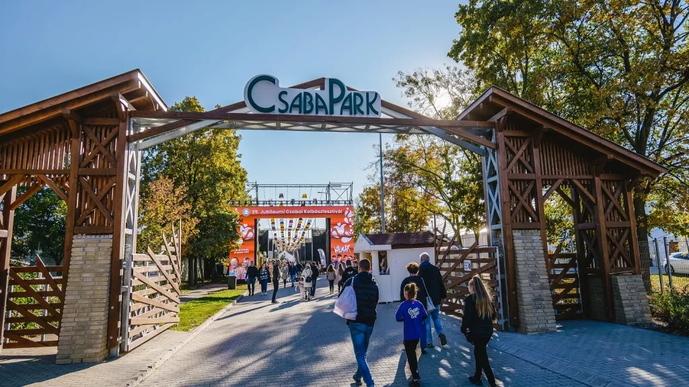
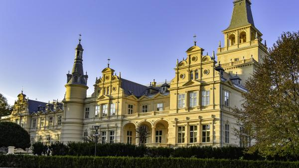

Mi van itt egyáltalán?
Csaba Gyöngye Kulturális Központ
A város és Békés megye
legmeghatározóbb kulturális komplexuma.
évente
több, mint ezer színes program és
kiállítás tekinthető meg itt.


Evangélikus Nagytemplom
Európa legnagyobb evangélikus temploma, illetve a
második legnagyobb magyarországi protestáns templom,
nála csak a debreceni nagytemplom nagyobb. Békés
vármegye legnagyobb temploma.
Árpád Gyógy -és Strandfürdő
A fürdőben 11 medence vár mindenkit, aki
gyógyulni vagy felfrissülni vágyik. Rendelkezésünkre
áll élmény- és tanmedence, pezsgőpadok,
napozószigetek és pezsgőfürdő, valamint 2 db
csúszda és örvény a szórakozni
vágyóknak.


Csaba Park - Kalandpark
A csabai kolbász készítésének
hagyományait megőrző és bemutató
rendezvényközpont, illetve a Csabai Kolbászfesztivál
helyszíne. Találhatunk itt emellett bor- és
pálinkamúzeumot, illetve gyalogosan és
kerékpárral is bejárható erdei ösvényeket
is.
Wenckheim kastélyok
1875 és 1879 között épült Ybl
Miklós tervei alapján, neoreneszánsz és eklektikus
stílusban. Az egyik legépebben megmaradt Békés
vármegyei kastély. Az épületet körülöleli
az impozáns kastélypark.
